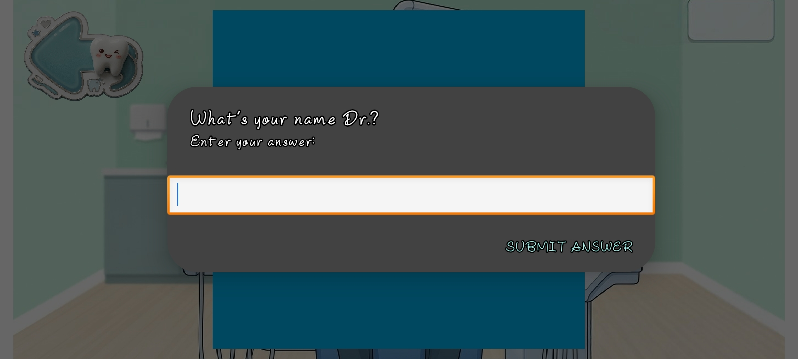
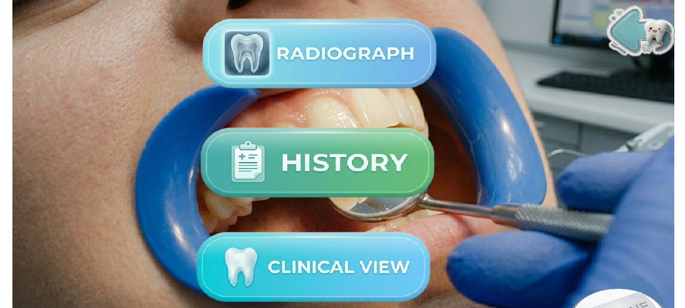
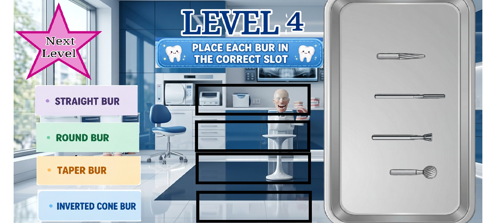
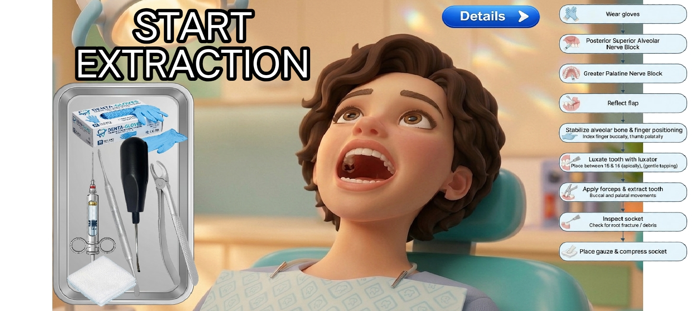

🪞
Preclinical Level 1: Mouth Mirror
The first exercise uses a mouth-mirror activity. The task is tap-based and is completed through ten taps. It is a simple introduction to interacting with the game's preclinical screens.
Explore Odontix Dental Clinic Simulator, an Android game featuring preclinical levels, dental instruments, bur-related activities, tooth restoration, extraction scenarios and a root canal-themed workflow.
This page is for players who want to understand what they are opening before they begin. The simulator is organised into preclinical activities and virtual clinical scenarios. Each screen has its own task; read the prompt on that screen rather than assuming every activity works in the same way.
The preclinical section is built around short interactive exercises. The clinical section uses tooth numbers and dental case labels to give its activities a familiar dental context. Those labels help identify the subject of a game screen; they are not records of real patients.
The notes below describe the content currently represented in the game. If a screen gives a more specific instruction, follow the instruction shown in the app.
These notes explain the details that are easy to miss when you first open the simulator. They describe the game as it is presented, not a recommended clinical sequence.
The first exercise uses a mouth-mirror activity. The task is tap-based and is completed through ten taps. It is a simple introduction to interacting with the game's preclinical screens.
The bur activity displays four labels: Straight, Round Tapered, Fissure and Other. Treat these as the categories used by this game; they are not a complete classification of dental burs.
Further preclinical activities are arranged as separate levels. Their individual prompts explain what to do on each screen. Check the on-screen task before moving through a level.
This is the endodontic scenario label used in the simulator. “Visit 2” identifies the stage represented by the game; it should not be read as a complete appointment plan or a guide to performing root canal treatment.
The extraction section includes scenarios labelled with FDI tooth numbers 16 and 17. These numbers identify the teeth in the game's case screens; they do not provide enough information to make a real extraction decision.
Other clinical screens include an Ellis #12 trauma label and a mobility scenario involving tooth 44. They are included as case-based game content, not as patient records or diagnostic conclusions.
A tooth number tells you which tooth a scenario refers to. It does not, by itself, explain the diagnosis, the reason for treatment or the steps required in real care.
These images show selected screens associated with the game. They help visitors see the interface before downloading the APK.





The screenshots represent selected screens and may not show every activity or every step available in the game.
The clinical section uses familiar dental notation to make each virtual case easier to identify. A quick reminder can help when moving between the game and a textbook.
In permanent dentition, the first digit identifies the quadrant and the second digit gives the tooth's position from the midline. For example, 36 is the permanent mandibular left first molar, 16 is the permanent maxillary right first molar, 17 is the permanent maxillary right second molar, and 44 is the permanent mandibular right first premolar.
For a full explanation of the numbering system, use the FDI numbering section in the Dental Learning Guide.
A case label is only a starting point. It does not establish pulpal status, periodontal condition, restorability, the presence or extent of trauma, or whether a procedure is appropriate. Those questions require a real clinical assessment.
A few habits make the simulator easier to follow and help keep the game content in perspective.
If an activity behaves differently after an app update, use the instructions currently displayed in the game. This page is a companion guide, not a substitute for the app's own prompts.
The game is designed for interaction; the written guide is where a topic can be examined in more detail. Use the two resources for different purposes rather than expecting a game screen to explain every dental concept.
For example, the simulator's bur activity gives you a set of labels to recognise. The learning guide discusses common bur head forms and explains why shape alone is not enough to decide how a bur should be used.
Likewise, a Tooth 36 case label helps you identify the tooth in the game. The guide's separate hypothetical case shows why history, examination, sensibility testing and radiographic findings need to be considered together.
Open the Dental Learning Guide when you want the longer explanation and knowledge-check questions.
Odontix Dental Clinic Simulator is an educational and entertainment project. Its virtual cases and treatment-themed activities are simplified representations designed for interaction with the game.
It is the mouth-mirror activity. The task uses ten taps to complete the interaction.
The game displays Straight, Round Tapered, Fissure and Other. These are the labels used in the activity, not an exhaustive bur taxonomy.
No. It identifies the Tooth 36 scenario represented in the simulator. Real endodontic treatment requires diagnosis, appropriate training, clinical judgement and supervision.
No. They are identifiers used for fictional or simulated game scenarios. They should not be interpreted as real patient records.
Use the relevant topic in the Dental Learning Guide and compare it with recognised textbooks and current professional guidance.
Download the Android version from the project's GitHub release. Check your device's compatibility and read Android's installation prompts before installing an APK.
Download Android APK